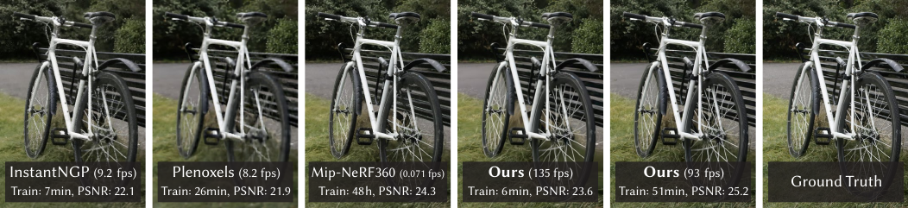
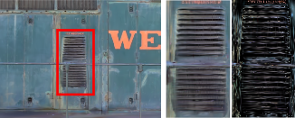
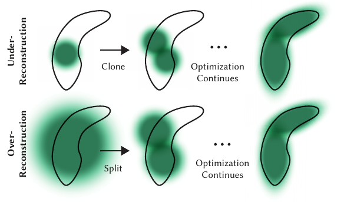

An interactive explainer
3D Gaussian Splatting: the primitive that ate 3D vision
In August 2023 a paper from Inria proposed representing a scene as a few million fuzzy, colored, semi-transparent ellipsoids — and optimizing them directly with gradient descent. No neural network in the renderer. No ray marching. The result matched the best NeRF of the day on visual quality while rendering at 134 fps instead of 0.06 fps — roughly 2,000× faster — and training in 40 minutes instead of 48 hours. Within eighteen months, Gaussian splats had colonized SLAM, avatars, autonomous driving, volumetric video, and 3D generation. This post explains the theory from scratch, maps the literature that grew around it, and ends with an honest comparison against every other 3D representation you might use instead.

For three years after NeRF (2020), the recipe for photorealistic novel view synthesis was fixed: encode the scene in the weights of a neural network, and render by ray marching — firing a ray through each pixel, querying the network at dozens to hundreds of sample points, and integrating. The quality was stunning. The cost was brutal: even heavily-optimized variants like InstantNGP ran at ~10 fps on small scenes, and the quality leader, Mip-NeRF360, took seconds per frame and 48 GPU-hours to train.
The 3D Gaussian Splatting paper asked a heretical question: what if the representation were not a function you query but a set of objects you draw? Take the sparse point cloud that camera calibration (SfM) gives you for free, place a fuzzy 3D Gaussian on each point, then optimize every Gaussian's position, shape, opacity, and color by differentiating through the rendering itself — and render the whole thing with a GPU-friendly rasterizer rather than ray marching. Explicit primitives, gradient-descent optimization, real-time rasterization: each piece existed before, but the combination broke the quality–speed trade-off that defined the field.
We'll build the method up from its one core object — the anisotropic 3D Gaussian — then follow the field it created, and finish by placing splats in the full design space of 3D representations: meshes, voxels, point clouds, SDFs, and neural fields.
1. The primitive: an anisotropic 3D Gaussian
A scene is a set of $N$ primitives (typically 0.5–5 million for a real scene). Each primitive $i$ is an unnormalized 3D Gaussian: a soft ellipsoidal blob of density centered at a mean $\vmu_i \in \mathbb{R}^3$ with a full $3\times 3$ covariance matrix $\vSigma_i$:
$$ G_i(x) = \exp\!\Big(\!-\tfrac{1}{2}(x-\vmu_i)^{T}\vSigma_i^{-1}(x-\vmu_i)\Big) $$
Attached to each Gaussian are two more learnable things: an opacity $\alpha_i \in [0,1)$ (how much light the blob absorbs), and a color $c_i$ stored as spherical harmonics coefficients up to degree 3 — so the color can change with viewing direction, which is what makes shiny floors and glass look right.
Why a full covariance and not just a radius? Because real geometry is locally flat or stringy, not spherical. A wall wants pancake-shaped Gaussians; a bicycle spoke wants needle-shaped ones. The paper's ablation shows isotropic (spherical) Gaussians visibly degrade quality at the same primitive count. Anisotropy is what lets a few million blobs represent surfaces compactly.

There is one technical wrinkle that the paper handles elegantly. A covariance matrix is only physically meaningful if it is positive semi-definite, and naive gradient descent on the 6 free entries of $\vSigma$ will happily step outside that set. So instead the paper parameterizes the covariance like an ellipsoid: a rotation $R$ (stored as a unit quaternion $q$) and per-axis scales $S = \mathrm{diag}(s_x, s_y, s_z)$:
$$ \vSigma = R\,S\,S^{T}R^{T} $$
Any $q$ and $s$ produce a valid covariance, so the optimizer can roam freely. This trick — optimize in an unconstrained parameterization whose image is exactly the valid set — is the same move as optimizing $\log\sigma$ instead of $\sigma$, and it shows up everywhere in the follow-up literature.
2. Project, sort, blend
To render, each 3D Gaussian must become a 2D shape on the screen. Here the paper reaches back to a 2001 result by Zwicker et al. — EWA splatting — from the era when point-based graphics was last fashionable. A 3D Gaussian viewed through a camera is (approximately) a 2D Gaussian on the image plane. Given the viewing transformation $W$ and the Jacobian $J$ of the affine approximation to the projective transformation, the screen-space covariance is:
$$ \vSigma' = J\,W\,\vSigma\,W^{T}J^{T} $$
Drop the third row and column of $\vSigma'$ and you have a $2\times 2$ covariance — an ellipse on screen, the splat. This is the only place perspective enters, and it is fully differentiable, so gradients flow from pixel errors back through $J$, $W$ into each Gaussian's position, rotation, and scale.
Color is then accumulated exactly as in NeRF's volume rendering equation, except the sum runs over sorted primitives instead of ray samples. With Gaussians sorted front-to-back along the view direction, the pixel color is:
$$ C = \sum_{i \in \mathcal{N}} c_i\,\alpha_i' \prod_{j=1}^{i-1}\big(1-\alpha_j'\big), \qquad \alpha_i' = \alpha_i \cdot G^{2D}_i(\text{pixel}) $$
where $\alpha_i'$ is the Gaussian's learned opacity modulated by its 2D footprint at this pixel. The product term is the transmittance — how much light still survives after passing through the splats in front. When it hits zero, everything behind is invisible and computation can stop. This is the same physics as NeRF; the difference is purely where the samples come from. NeRF samples blindly along the ray and asks a network what's there; splatting already knows where the matter is, because the matter is the representation.
The whole rendering pipeline in one loop: anisotropic 3D Gaussians are projected onto the image plane via $\Sigma' = JW\Sigma W^T J^T$, depth-sorted, and alpha-blended front-to-back. The transmittance bar $T$ drains as each splat contributes; when it saturates, the pixel is done.
View-dependent color via spherical harmonics
Each Gaussian's color is not a fixed RGB but a function of viewing direction, expressed in the spherical harmonics basis: degree 0 is a constant color, degree 1 adds a smooth front/back–left/right tilt, degrees 2 and 3 add increasingly sharp lobes. Sixteen coefficients per channel (48 numbers) buy convincing glossiness and sheen without any network evaluation — reading a polynomial is almost free. This is also most of the memory bill: of the 59 floats per Gaussian, 48 are SH coefficients, which is why nearly every compression paper attacks the SH first.
3. The rasterizer that made it real-time
The math above was known. The reason this paper changed the field is a CUDA kernel: a tile-based, fully differentiable rasterizer that renders and backpropagates through millions of sorted, blended splats in milliseconds. Its design choices are worth understanding because they explain both the speed and the artifacts.
render(gaussians, camera):
1. split screen into 16×16-pixel tiles
2. cull Gaussians outside the view frustum (99% confidence test)
3. instantiate one entry per (gaussian, tile-it-overlaps) pair
key = [ tile ID | view-space depth ]
4. ONE global GPU radix sort over all entries # not per-pixel!
5. for each tile (one CUDA thread block):
walk its depth-sorted list front-to-back
each pixel accumulates c·α·T and updates T
stop when T ≈ 0 (pixel saturated)The crucial trade is in step 4. Exact alpha blending needs a per-pixel depth sort, which is what made earlier point-based methods slow. Here, splats are sorted once per frame, per tile, with a single radix sort — and the ordering within a tile is shared by all 256 pixels. That ordering is approximate (two overlapping splats can be in the "wrong" order for some pixels in the tile), but the error vanishes as splats shrink toward pixel size — and the optimizer, trained through this same renderer, learns to produce scenes that look right under this approximation. The approximation is baked into the training loss. This is also the origin of the well-known "popping" artifact when the camera rotates: the global sort order changes discretely, and later work (e.g. StopThePop, ray-traced Gaussians) addresses exactly this.
Equally important for training: the backward pass revisits the same sorted lists back-to-front, so gradient flow has no cap on the number of blended primitives per pixel — earlier differentiable point renderers truncated gradients to the front few points, which the paper shows costs 11 dB PSNR. Memory stays bounded by a neat trick: instead of storing every intermediate transmittance, only the final accumulated opacity is stored, and intermediate values are recovered by division during the backward traversal.
4. Optimization and adaptive densification
Training is plain stochastic gradient descent on rendered-vs-photo error. Pick a training photo, render from its camera, compare, backpropagate into every Gaussian parameter. The loss mixes a pixel term and a structural term:
$$ \mathcal{L} = (1-\lambda)\,\mathcal{L}_1 + \lambda\,\mathcal{L}_{\text{D-SSIM}}, \qquad \lambda = 0.2 $$
Opacity goes through a sigmoid and scales through an exponential — the same "optimize in unconstrained space" trick as the quaternion-and-scale covariance. But gradient descent can only adjust Gaussians that exist; it cannot conjure one where the SfM point cloud had a hole, nor erase a useless one. The fix is the paper's most distinctive mechanism: adaptive density control, run every 100 iterations.

The signal that triggers both moves is the same and is beautifully simple: a large view-space positional gradient (threshold $\tau_{\text{pos}} = 0.0002$). Intuitively, if the optimizer keeps trying to drag a Gaussian around, the region it lives in is badly explained — either there's too little matter there (clone to add some) or one blob is being stretched over detail it can't represent (split it). Meanwhile Gaussians whose opacity falls below a threshold are deleted, and every 3,000 iterations all opacities are reset to near zero — a "prove you're useful or die" event that kills floaters that parked themselves near the camera. Population dynamics, not just parameter updates: the representation grows from ~100K SfM seeds to a few million Gaussians exactly where the scene needs them.
5. Results: the numbers that started a land rush
The headline table, averaged over the Mip-NeRF360 dataset (the hardest of the three benchmarks — large unbounded outdoor/indoor scenes), tells the whole story. Quality matches the reigning champion; speed and training time belong to a different sport.
| Method | PSNR ↑ | SSIM ↑ | LPIPS ↓ | Train | FPS | Memory |
|---|---|---|---|---|---|---|
| Plenoxels | 23.08 | 0.626 | 0.463 | 25m 49s | 6.8 | 2.1 GB |
| InstantNGP (Big) | 25.59 | 0.699 | 0.331 | 7m 30s | 9.4 | 48 MB |
| Mip-NeRF360 | 27.69 | 0.792 | 0.237 | 48 h | 0.06 | 8.6 MB |
| 3DGS — 7K iters | 25.60 | 0.770 | 0.279 | 6m 25s | 160 | 523 MB |
| 3DGS — 30K iters | 27.21 | 0.815 | 0.214 | 41m 33s | 134 | 734 MB |
Mip-NeRF360 dataset averages from Table 1 of the paper; all runs on an A6000. Note the one column 3DGS loses badly: memory. 734 MB vs 8.6 MB is an 85× penalty — the price of being explicit — and it spawned an entire compression sub-literature.
Two honest caveats from the paper's own limitations section, both of which defined research agendas: sparsely-observed regions grow elongated, blotchy Gaussians ("floaters"), and the per-frame global sort causes popping when the view rotates. Peak training memory exceeded 20 GB in the prototype — large-scene training was genuinely hard until hierarchical and distributed follow-ups.
6. The literature: how the field grew
The 3DGS paper has accumulated citations at a pace matched by very few papers in graphics history, and the follow-up literature organized itself into clear tracks within months. The widget below is a filterable map of the works that actually mattered — the ones that either fixed a fundamental flaw, opened a new application, or changed how the community thinks about the representation. Click any card for the one-paragraph version of what it did.
A few arcs are worth narrating beyond the cards. The quality arc runs from Mip-Splatting (fixing aliasing when you zoom — the original blows up because splat size doesn't account for sampling rate) through Gaussian Opacity Fields and ray-traced Gaussians (3DGRT), which replace the approximate tile-sorted rasterizer with exact per-ray evaluation, eliminating popping at some speed cost. The geometry arc — 2DGS, SuGaR, GOF — confronts the fact that fuzzy volumetric blobs don't define a surface: flatten Gaussians into surfels, or regularize them toward a mesh, and suddenly you can extract usable geometry, not just pretty pixels. The principled-optimization arc (Scaffold-GS, 3DGS-MCMC) replaces the clone/split heuristics. And the feed-forward arc (pixelSplat, MVSplat, and the large reconstruction models that followed) may be the most consequential: instead of optimizing splats per scene for minutes, a transformer predicts Gaussians from a couple of images in one forward pass — turning a reconstruction algorithm into an output format for generative models.
7. What splats are actually used for
A representation earns its keep by what gets built on it. Splatting's combination of real-time rendering, photographic fidelity, differentiability, and explicit editability turned out to fit a remarkable range of applications — and each one leans on a different subset of those properties.
Capture, VR/AR, and virtual production
The most direct use: photograph a real place, get a photorealistic walkthrough. Because rendering is rasterization, splat scenes run on consumer GPUs, phones (Niantic's Scaniverse, Polycam), and in WebGL/WebGPU viewers in a browser tab — something no NeRF could honestly claim. VR demands ~90 fps in stereo, which 3DGS meets and ray-marching methods never did. Film and broadcast use splat captures as instantly-relightable-ish digital backlots; real-estate and e-commerce use them as the successor to 360° photos.
SLAM and robotics
SplaTAM and MonoGS demonstrated dense SLAM with a splat map: a robot localizes by rendering its current map and comparing against the camera feed — differentiable rendering gives the pose gradient for free — while simultaneously growing the map with new Gaussians. Compared to NeRF-based SLAM (iMAP, NICE-SLAM), the explicit map renders fast enough for the real-time inner loop and can be edited incrementally (a moved chair = moved Gaussians, no retraining). Navigation planners like Splat-Nav read occupancy directly off the ellipsoids.
Autonomous driving simulation
DrivingGaussian and Street Gaussians reconstruct logged drives as editable splat scenes: background static, each vehicle its own Gaussian set on a motion track. Replay the scene, move the ego car, insert a cut-in — closed-loop simulation from real sensor data, photorealistic enough to test perception stacks. This is now one of the hottest commercial uses (Waymo, NVIDIA and Zoox have all published splat-based reconstruction work for sensor simulation).
Avatars and telepresence
Rig Gaussians to a parametric face or body model (GaussianAvatars binds them to FLAME mesh triangles; Animatable Gaussians to SMPL) and you get a photoreal avatar that reenacts expression and pose in real time. Codec-avatar-style telepresence needs exactly this combination — fidelity at 90+ fps — and Meta, Apple-adjacent labs, and every avatar startup pivoted to Gaussians within a year.
Dynamic scenes and volumetric video
Dynamic 3D Gaussians track the same set of Gaussians through time (giving long-range 3D motion trajectories almost for free); 4DGS and Deformable-3DGS learn a deformation field over a canonical splat scene. The result is volumetric video you can scrub and orbit in real time — the "watch a basketball game from the court" demo that volumetric capture has promised for a decade, now actually renderable on one GPU.
3D generation
DreamGaussian made text-to-3D fast by using splats as the canvas for score distillation (minutes instead of hours), and the feed-forward models (LGM, GRM) turn a single image or text prompt into Gaussians in seconds. Splats are an attractive generative target precisely because they're a flat list of vectors — no topology to get wrong, trivially differentiable, instantly viewable.
Everything else
Surgical scene reconstruction from endoscopy (deformable splats under tissue motion), satellite and aerial mapping at city scale (hierarchical LODs), XRay/CT-style tomographic variants, language-embedded splats (LangSplat) that let you query a scene with text, and physics simulation directly on the particles (PhysGaussian: Gaussians double as MPM material points — "what you see is what you simulate"). The pattern in all of them: splats are the first photoreal representation that is simultaneously fast, differentiable, and an explicit set of objects you can grab.
8. Splats vs. every other 3D representation
To see why splats won so much ground so fast — and where they genuinely lose — put every major 3D representation on the same axes. Two axes organize the whole space: explicit vs. implicit (is the geometry a list of primitives you can index, or a function you must query?) and surface vs. volume (does it model the boundary of objects, or density everywhere in space?). Splats occupy a previously-empty corner: explicit and volumetric and differentiable.
| Representation | Type | Pros | Cons |
|---|---|---|---|
| Triangle mesh | explicit · surface | 40 years of tooling and hardware rasterization; compact for flat geometry; UV textures, rigging, physics, CAD all native; crisp silhouettes | fixed topology is hard to optimize from images; awful at fuzz, foliage, hair, transparency; quality capped by triangle budget; reconstruction from photos needs fragile surface extraction |
| Point cloud | explicit · surface samples | the raw output of LiDAR/depth sensors and SfM; trivially editable and streamable; no topology to maintain | holes between points — not renderable photorealistically without splatting/meshing on top; no view-dependent appearance; no notion of solid surface |
| Voxel grid | explicit · volume | regular structure → fast lookup, easy 3D convolution; natural for medical/scientific volume data; simple occupancy queries for planning | memory grows cubically with resolution; fine detail needs sparse octrees that complicate everything; axis-aligned blockiness (see the Plenoxels render above) |
| SDF / implicit surface | implicit · surface | watertight surfaces of arbitrary topology; exact normals and distances (great for physics, robotics collision, CSG); best-in-class geometry from images (NeuS, Neuralangelo) | needs sphere tracing or marching cubes to render/extract; slow to optimize; struggles with thin shells, fuzz, and semi-transparency; appearance usually bolted on separately |
| NeRF (MLP field) | implicit · volume | tiny (MBs); continuous — no resolution limit; principled volume rendering; superb view-dependent effects; graceful with fuzz and transparency | ray marching = hundreds of network queries per pixel → slow render and training; not editable (scene is entangled in weights); no direct geometry access |
| Hybrid grid NeRF (InstantNGP, Plenoxels) | hybrid · volume | minutes-fast training; small models (InstantNGP: 13–48 MB); keeps NeRF's volumetric strengths | still ray-marched → ~10 fps ceiling, far from VR-ready; hash collisions / grid resolution cap fine detail; still not editable |
| 3D Gaussians | explicit · volume | real-time (100–1000+ fps) via rasterization; NeRF-level photorealism incl. view-dependence; fast training; explicit and editable (move/delete/animate primitives); differentiable end-to-end; runs on phones and in browsers | memory-hungry (100s of MB raw — 85× Mip-NeRF360); no well-defined surface → mediocre geometry without 2DGS/SuGaR-style fixes; approximate sorting → popping; floaters in under-observed regions; relighting hard (appearance baked in) |
Three readings of this table. First, splats did not dominate — they filled a hole. If you need watertight geometry for machining, you still want an SDF or mesh. If you need a 9 MB scene over a slow link, Mip-NeRF360's compactness still wins. If you need relightable assets with materials, meshes with PBR textures remain the only mature answer. Splats win when the question is "photoreal, real-time, from photos, editable" — which happens to be the question VR, robotics, simulation, and telepresence were all asking.
Second, the boundaries are dissolving. 2DGS makes splats surface-like; SuGaR ties them to a mesh; feed-forward models make them an output format; compressed splats (HAC, Self-Organizing Gaussians) close most of the memory gap to within ~10× of NeRF. Each "con" in the splat row is an active research front, and several have already been substantially mitigated.
Third, the deep lesson is about optimization-friendliness as the selection pressure. Meshes lost the reconstruction race not because they render worse — they render faster — but because their gradients are terrible (topology is discrete). NeRF won 2020–2023 because an MLP is the easiest thing in the world to differentiate. Splats won 2023+ because they kept the differentiability and recovered explicitness and speed. The history of 3D representations since 2020 is the history of "what can gradient descent shape most easily while staying fast to render."
9. The bottom line
3D Gaussian Splatting is three old ideas — EWA point splatting (2001), differentiable volumetric rendering (NeRF, 2020), and tile-based GPU software rasterization — fused at exactly the right moment. The representation is just a particle list: position, ellipsoid shape, opacity, view-dependent color, a few million times. Everything else is an optimization loop that grows, splits, and prunes the population until renders match photographs.
Open problems
- Relighting and materials. Splat appearance bakes lighting in. Decomposing into geometry × material × illumination (inverse rendering on splats) works in papers, not yet robustly in products.
- Geometry without compromise. 2DGS-style surfels trade some rendering quality for surfaces; nothing yet gives both mesh-grade geometry and full splat fidelity in one representation.
- Sparse and casual capture. The method assumes dozens of well-distributed photos and good SfM poses. Few-shot, single-video, and pose-free splatting remain noticeably worse than dense capture.
- Principled probabilistic footing. 3DGS-MCMC opened the door to treating splat optimization as sampling; a clean theory of what the clone/split dynamics converge to is still missing.
- The feed-forward future. If transformers predicting Gaussians keep improving, per-scene optimization may become a niche — and the interesting question becomes what the right generative prior over splat scenes is.
The mental model to keep
A Gaussian splat scene is a point cloud that learned to render itself. Each point grew a shape, an opacity, and a view-dependent color, and the population was shaped by gradient descent until projecting and blending it reproduces reality. Once you see it that way, the entire follow-up literature becomes predictable: anything you ever wanted to do with a point cloud (compress, track, deform, segment, simulate, generate), someone has now done with splats — at photographic quality, in real time.